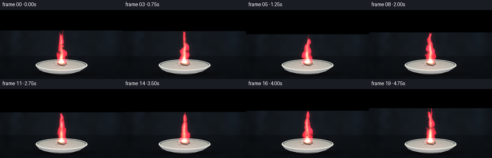
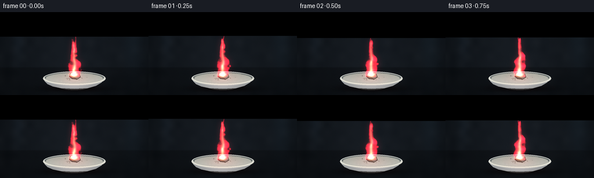
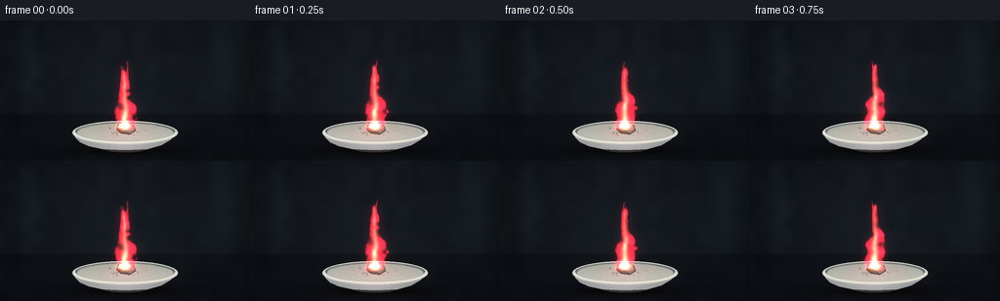
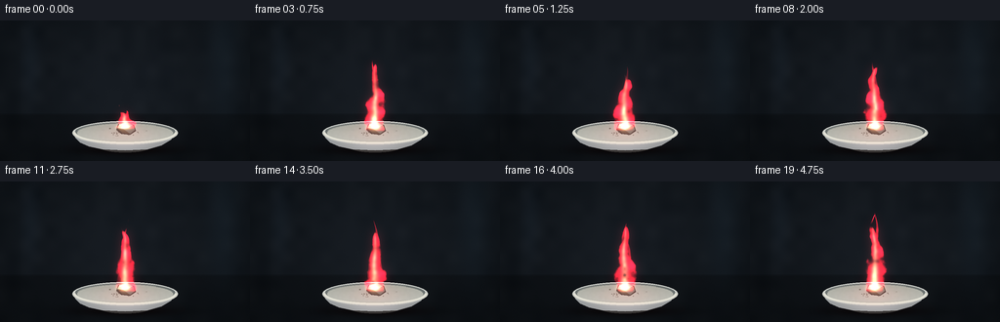
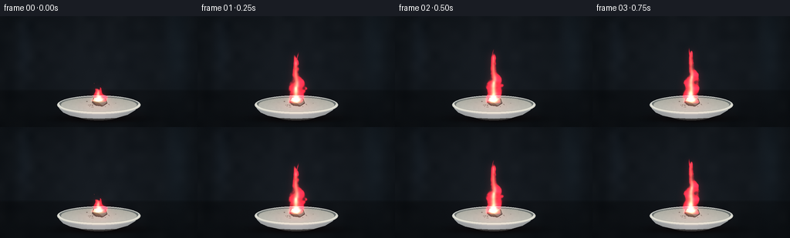
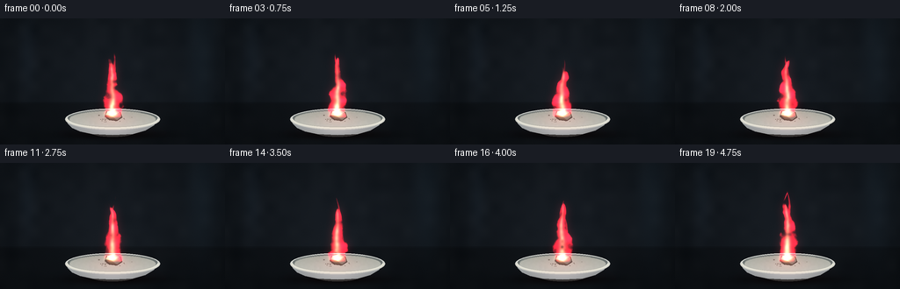

CODING AGENTS AS PIXEL WORLD MODELS
traex/GPT-6.1-Sol · phygen_128
点击播放 · 原生 RGB 像素
逐轮保存的候选
回放视频、检查图与代码变化。
每份候选均可单独播放。实际图片检查记录在下方工具轨迹中。
候选 01播放与检查图
点击播放 · 原生 RGB 像素


展开代码变化
--- 上一保存版本
+++ 本次保存版本
@@ -0,0 +1,145 @@
+from pathlib import Path
+import numpy as np
+from PIL import Image, ImageDraw, ImageFilter
+import artifact_io
+
+ROOT=Path(__file__).resolve().parent
+W,H,S=256,144,3
+w,h=W*S,H*S
+Y,X=np.mgrid[0:h,0:w].astype(float); X/=S; Y/=S
+rng=np.random.default_rng(43)
+
+# Continuously interpolated, advected noise, used for the rising combustion gases.
+grids=[rng.normal(size=(96,96)) for _ in range(4)]
+def noise(x,y,scale=1,layer=0):
+ g=grids[layer]; u=x/scale;v=y/scale
+ ix=np.floor(u).astype(int);iy=np.floor(v).astype(int)
+ u-=ix;v-=iy;u=u*u*(3-2*u);v=v*v*(3-2*v)
+ return ((1-u)*(1-v)*g[iy%96,ix%96]+u*(1-v)*g[iy%96,(ix+1)%96]+(1-u)*v*g[(iy+1)%96,ix%96]+u*v*g[(iy+1)%96,(ix+1)%96])
+
+def ellipse(draw,box,fill,width=0):
+ draw.ellipse(tuple(int(i*S) for i in box),fill=fill,width=width)
+
+def poly(draw,pts,fill):
+ draw.polygon([(int(x*S),int(y*S)) for x,y in pts],fill=fill)
+
+# A quiet, defocused laboratory backdrop and a charcoal benchtop.
+bg=np.zeros((h,w,3),float)
+spot=np.exp(-((X-128)/105)**2-((Y-71)/82)**2)
+for c,b in enumerate([13,17,21]): bg[:,:,c]=b+spot*[10,11,13][c]
+bg+=noise(X,Y,13,1)[:,:,None]*1.15
+bg+=np.exp(-((X-229)/17)**2-((Y-40)/75)**2)[:,:,None]*np.array([4,7,9])
+# Indistinct vertical background reflections.
+bg+=np.exp(-((X-31)/10)**2-((Y-43)/42)**2)[:,:,None]*np.array([4,6,8])
+table=Y>95
+bg[table]*=.76
+bg+=np.exp(-((Y-96)/.8)**2)[:,:,None]*np.array([2,2.5,3])
+grain=rng.normal(0,.48,(h,w,1)); bg+=grain
+# Contact shadow under the porcelain dish.
+shadow=np.exp(-((X-129)/52)**2-((Y-133)/5)**2)
+bg*=1-shadow[:,:,None]*.70
+
+base=Image.fromarray(np.uint8(np.clip(bg,0,255)))
+d=ImageDraw.Draw(base)
+# Shallow porcelain evaporating dish: curved front, foot, and rim.
+ellipse(d,(105,127,151,135),(51,52,51))
+pts=[(75,116),(77,120),(82,125),(91,129),(105,132),(128,133),(151,132),(165,128),(175,122),(179,116)]
+poly(d,pts,(135,140,141))
+basearr=np.asarray(base).astype(float)
+# Front wall has softly varying reflected illumination, curved shading.
+mask=Image.new('L',(w,h));md=ImageDraw.Draw(mask);poly(md,pts,255)
+m=np.array(mask)/255
+frontlight=17+28*np.exp(-((X-128)/35)**2)-23*np.clip((Y-121)/12,0,1)+5*np.sin((X-70)/30)
+basearr+=m[:,:,None]*frontlight[:,:,None]
+base=Image.fromarray(np.uint8(np.clip(basearr,0,255)));d=ImageDraw.Draw(base)
+ellipse(d,(74,103,182,127),(200,202,195))
+ellipse(d,(77,104,179,123),(107,114,112))
+ellipse(d,(79,106,177,124),(176,179,168))
+# Inner cavity, shaded on the rear wall, lighter porcelain toward viewer.
+arr=np.asarray(base).astype(float)
+r=((X-128)/48.8)**2+((Y-115)/8.5)**2
+inside=r<1
+arr[inside]=np.stack([167+24*(Y[inside]-106)/18,169+24*(Y[inside]-106)/18,159+26*(Y[inside]-106)/18],axis=-1)
+arr[inside]+=noise(X[inside],Y[inside],2,2)[:,None]*1.2
+# Very fine elliptical specular rims.
+base=Image.fromarray(np.uint8(np.clip(arr,0,255)));d=ImageDraw.Draw(base)
+d.arc(tuple(int(i*S) for i in (75,103,181,126)),0,180,fill=(226,226,213),width=2*S)
+d.arc(tuple(int(i*S) for i in (75,103,181,126)),180,350,fill=(215,219,213),width=1*S)
+d.arc(tuple(int(i*S) for i in (79,105,177,123)),185,310,fill=(139,144,138),width=S)
+# Small dark oxide residue and metallic lithium fragment, in the center of the dish.
+ash=Image.new('RGBA',(w,h));a=ImageDraw.Draw(ash)
+for i in range(52):
+ px=128+rng.normal(0,8.1); py=114+rng.normal(0,1.85);rr=rng.uniform(.15,.85)
+ a.ellipse((int((px-rr)*S),int((py-rr*.5)*S),int((px+rr)*S),int((py+rr*.5)*S)),fill=(58,54,47,int(rng.uniform(70,150))))
+base=Image.alpha_composite(base.convert('RGBA'),ash).convert('RGB');d=ImageDraw.Draw(base)
+poly(d,[(119,112),(121,106),(130,104),(137,107),(139,113),(133,117),(124,116)],(68,65,61))
+poly(d,[(120,110),(122,106),(130,104),(136,107),(131,110),(126,111)],(184,180,163))
+poly(d,[(126,111),(131,110),(136,107),(138,112),(133,116)],(115,117,109))
+poly(d,[(120,110),(126,111),(133,116),(125,115)],(94,86,74))
+poly(d,[(122,106),(129,105),(127,107),(122,108)],(226,224,211))
+basearr=np.asarray(base).astype(float)
+
+frames=[]
+for k in range(20):
+ t=k/4
+ # Smooth fluctuations in fuel release; a steady red flame is present throughout.
+ height=65+4*np.sin(4.5*t)+3*np.sin(8.1*t+1)
+ z=(110-Y)/height
+ positive=np.maximum(z,0)
+ drift=2.5*np.sin(z*5.8-t*2.8)*positive+2*np.sin(z*11-t*5)*positive**1.7
+ center=128+drift
+ large=noise(X+2*t,Y+19*t,9,0)
+ medium=noise(X-4*t,Y+29*t,3.6,1)
+ fine=noise(X,Y+37*t,1.45,2)
+ turbulence=large*.85+medium*.30+fine*.1
+ # The main flame has a broad skirt, narrow waist and a torn, wispy crown.
+ width=8.9*(1-positive)**.6 + 3.4*np.exp(-((z-.28)/.21)**2)
+ width=np.maximum(width,0.4)
+ xx=(X-center)/(width+1e-3)
+ contour=1-xx**2 + turbulence*.40
+ top=1-z+large*.085+medium*.02
+ envelope=np.clip(contour*2,0,1)*np.clip(top*12,0,1)*np.clip(z*18+1.1,0,1)
+ envelope*=np.exp(-np.maximum(-z,0)*18)
+ # Slim independently bending tongues add asymmetric convective structure.
+ tongues=np.zeros_like(X)
+ for j,(off,hh,ww) in enumerate([(-7,.73,3.3),(7,.86,3.0),(-1,1.08,3.5)]):
+ z2=(110-Y)/(height*hh)
+ c=128+off*(1-z2)+3*np.sin(z2*7-t*(3.2+j)+j)*z2
+ wid=np.maximum(.2,ww*(1-np.clip(z2,0,1))**.65)
+ q=1-((X-c)/wid)**2+.28*medium
+ g=np.clip(q*1.8,0,1)*np.clip((1-z2+.05*large)*15,0,1)*np.clip(z2*12,0,1)
+ tongues=np.maximum(tongues,g*.70)
+ flame=np.maximum(envelope,tongues)
+ flame*=np.clip(1+.30*large+.18*medium,0,1.6)
+ # Colored luminous gas, with a hot pale heart and crimson outer mantle.
+ core=np.exp(-((X-(127.5+drift*.55))/(3.1*(1-np.clip(z,0,1))+.65))**2)
+ core*=np.clip(1-z,0,1)**.65*flame
+ ripples=(.65+.35*np.sin(z*19+large*2+t*9))
+ flame*=.82+.18*ripples
+ col=np.zeros((h,w,3),float)
+ col[:,:,0]=225*flame+66*core
+ col[:,:,1]=22*flame+147*core
+ col[:,:,2]=40*flame+83*core
+ # Strong warm incandescent light right at the ignited metal.
+ coal=np.exp(-((X-128)/6)**2-((Y-109)/2.3)**2)
+ col+=coal[:,:,None]*np.array([140,118,57])
+ # Local reflected flame color on the inner dish and the nearby tabletop.
+ reflected=np.exp(-((X-128)/30)**2-((Y-116)/10)**2)
+ arr=basearr.copy()
+ arr+=reflected[:,:,None]*np.array([27,4,3])*(.9+.1*np.sin(t*7))
+ arr+=np.exp(-((X-128)/48)**2-((Y-131)/7)**2)[:,:,None]*np.array([5,1,1])
+ # Diffuse red optical bloom is subtle; preserve detailed bright flame edges.
+ luminous=Image.fromarray(np.uint8(np.clip(col,0,255)))
+ bloom=np.asarray(luminous.filter(ImageFilter.GaussianBlur(5*S))).astype(float)*.23
+ bloom+=np.asarray(luminous.filter(ImageFilter.GaussianBlur(1.3*S))).astype(float)*.17
+ # Additive radiance plus mild occlusion of the metal by the dense flame.
+ arr=arr*(1-flame[:,:,None]*.33)+col+bloom
+ # Fine combustion sparks, rare and tiny, drifting upward rather than spraying.
+ for j in range(2):
+ age=(t*.35+j*.46)%1
+ sx=127+6*np.sin(age*5+j*3); sy=107-43*age
+ sp=np.exp(-((X-sx)/.30)**2-((Y-sy)/.65)**2)*np.sin(np.pi*age)**3
+ arr+=sp[:,:,None]*np.array([85,20,17])
+ out=Image.fromarray(np.uint8(np.clip(arr,0,255))).resize((W,H),Image.Resampling.LANCZOS)
+ frames.append(np.asarray(out))
+artifact_io.save(np.stack(frames),ROOT)
候选 02播放与检查图
点击播放 · 原生 RGB 像素


展开代码变化
--- 上一保存版本
+++ 本次保存版本
@@ -93,7 +93,7 @@
fine=noise(X,Y+37*t,1.45,2)
turbulence=large*.85+medium*.30+fine*.1
# The main flame has a broad skirt, narrow waist and a torn, wispy crown.
- width=8.9*(1-positive)**.6 + 3.4*np.exp(-((z-.28)/.21)**2)
+ width=8.9*np.maximum(1-positive,0)**.6 + 3.4*np.exp(-((z-.28)/.21)**2)
width=np.maximum(width,0.4)
xx=(X-center)/(width+1e-3)
contour=1-xx**2 + turbulence*.40
候选 03播放与检查图
点击播放 · 原生 RGB 像素


展开代码变化
--- 上一保存版本
+++ 本次保存版本
@@ -83,7 +83,8 @@
for k in range(20):
t=k/4
# Smooth fluctuations in fuel release; a steady red flame is present throughout.
- height=65+4*np.sin(4.5*t)+3*np.sin(8.1*t+1)
+ ignition=0.25+0.75*(1-np.exp(-t*7))
+ height=(65+4*np.sin(4.5*t)+3*np.sin(8.1*t+1))*ignition
z=(110-Y)/height
positive=np.maximum(z,0)
drift=2.5*np.sin(z*5.8-t*2.8)*positive+2*np.sin(z*11-t*5)*positive**1.7
可观测工具轨迹
实际执行的命令与返回图片。
命令 1exit 0
/bin/bash -lc 'ls -la && cat prompt.txt && cat GENERATION_RULES.md && cat task_spec.json'
命令 2exit 0
/bin/bash -lc 'cat artifact_io.py'
命令 3exit 0
/bin/bash -lc "cat > generate.py <<'PY'
from pathlib import Path
import numpy as np
from PIL import Image, ImageDraw, ImageFilter
import artifact_io
ROOT=Path(__file__).resolve().parent
W,H,S=256,144,3
w,h=W*S,H*S
Y,X=np.mgrid[0:h,0:w].astype(float); X/=S; Y/=S
rng=np.random.default_rng(43)
# Continuously interpolated, advected noise, used for the rising combustion gases.
grids=[rng.normal(size=(96,96)) for _ in range(4)]
def noise(x,y,scale=1,layer=0):
g=grids[layer]; u=x/scale;v=y/scale
ix=np.floor(u).astype(int);iy=np.floor(v).astype(int)
u-=ix;v-=iy;u=u*u*(3-2*u);v=v*v*(3-2*v)
return ((1-u)*(1-v)*g[iy%96,ix%96]+u*(1-v)*g[iy%96,(ix+1)%96]+(1-u)*v*g[(iy+1)%96,ix%96]+u*v*g[(iy+1)%96,(ix+1)%96])
def ellipse(draw,box,fill,width=0):
draw.ellipse(tuple(int(i*S) for i in box),fill=fill,width=width)
def poly(draw,pts,fill):
draw.polygon([(int(x*S),int(y*S)) for x,y in pts],fill=fill)
# A quiet, defocused laboratory backdrop and a charcoal benchtop.
bg=np.zeros((h,w,3),float)
spot=np.exp(-((X-128)/105)**2-((Y-71)/82)**2)
for c,b in enumerate([13,17,21]): bg[:,:,c]=b+spot*[10,11,13][c]
bg+=noise(X,Y,13,1)[:,:,None]*1.15
bg+=np.exp(-((X-229)/17)**2-((Y-40)/75)**2)[:,:,None]*np.array([4,7,9])
# Indistinct vertical background reflections.
bg+=np.exp(-((X-31)/10)**2-((Y-43)/42)**2)[:,:,None]*np.array([4,6,8])
table=Y>95
bg[table]*=.76
bg+=np.exp(-((Y-96)/.8)**2)[:,:,None]*np.array([2,2.5,3])
grain=rng.normal(0,.48,(h,w,1)); bg+=grain
# Contact shadow under the porcelain dish.
shadow=np.exp(-((X-129)/52)**2-((Y-133)/5)**2)
bg*=1-shadow[:,:,None]*.70
base=Image.fromarray(np.uint8(np.clip(bg,0,255)))
d=ImageDraw.Draw(base)
# Shallow porcelain evaporating dish: curved front, foot, and rim.
ellipse(d,(105,127,151,135),(51,52,51))
pts=[(75,116),(77,120),(82,125),(91,129),(105,132),(128,133),(151,132),(165,128),(175,122),(179,116)]
poly(d,pts,(135,140,141))
basearr=np.asarray(base).astype(float)
# Front wall has softly varying reflected illumination, curved shading.
mask=Image.new('L',(w,h));md=ImageDraw.Draw(mask);poly(md,pts,255)
m=np.array(mask)/255
frontlight=17+28*np.exp(-((X-128)/35)**2)-23*np.clip((Y-121)/12,0,1)+5*np.sin((X-70)/30)
basearr+=m[:,:,None]*frontlight[:,:,None]
base=Image.fromarray(np.uint8(np.clip(basearr,0,255)));d=ImageDraw.Draw(base)
ellipse(d,(74,103,182,127),(200,202,195))
ellipse(d,(77,104,179,123),(107,114,112))
ellipse(d,(79,106,177,124),(176,179,168))
# Inner cavity, shaded on the rear wall, lighter porcelain toward viewer.
arr=np.asarray(base).astype(float)
r=((X-128)/48.8)**2+((Y-115)/8.5)**2
inside=r<1
arr[inside]=np.stack([167+24*(Y[inside]-106)/18,169+24*(Y[inside]-106)/18,159+26*(Y[inside]-106)/18],axis=-1)
arr[inside]+=noise(X[inside],Y[inside],2,2)[:,None]*1.2
# Very fine elliptical specular rims.
base=Image.fromarray(np.uint8(np.clip(arr,0,255)));d=ImageDraw.Draw(base)
d.arc(tuple(int(i*S) for i in (75,103,181,126)),0,180,fill=(226,226,213),width=2*S)
d.arc(tuple(int(i*S) for i in (75,103,181,126)),180,350,fill=(215,219,213),width=1*S)
d.arc(tuple(int(i*S) for i in (79,105,177,123)),185,310,fill=(139,144,138),width=S)
# Small dark oxide residue and metallic lithium fragment, in the center of the dish.
ash=Image.new('RGBA',(w,h));a=ImageDraw.Draw(ash)
for i in range(52):
px=128+rng.normal(0,8.1); py=114+rng.normal(0,1.85);rr=rng.uniform(.15,.85)
a.ellipse((int((px-rr)*S),int((py-rr*.5)*S),int((px+rr)*S),int((py+rr*.5)*S)),fill=(58,54,47,int(rng.uniform(70,150))))
base=Image.alpha_composite(base.convert('RGBA'),ash).convert('RGB');d=ImageDraw.Draw(base)
poly(d,[(119,112),(121,106),(130,104),(137,107),(139,113),(133,117),(124,116)],(68,65,61))
poly(d,[(120,110),(122,106),(130,104),(136,107),(131,110),(126,111)],(184,180,163))
poly(d,[(126,111),(131,110),(136,107),(138,112),(133,116)],(115,117,109))
poly(d,[(120,110),(126,111),(133,116),(125,115)],(94,86,74))
poly(d,[(122,106),(129,105),(127,107),(122,108)],(226,224,211))
basearr=np.asarray(base).astype(float)
frames=[]
for k in range(20):
t=k/4
# Smooth fluctuations in fuel release; a steady red flame is present throughout.
height=65+4*np.sin(4.5*t)+3*np.sin(8.1*t+1)
z=(110-Y)/height
positive=np.maximum(z,0)
drift=2.5*np.sin(z*5.8-t*2.8)*positive+2*np.sin(z*11-t*5)*positive**1.7
center=128+drift
large=noise(X+2*t,Y+19*t,9,0)
medium=noise(X-4*t,Y+29*t,3.6,1)
fine=noise(X,Y+37*t,1.45,2)
turbulence=large*.85+medium*.30+fine*.1
# The main flame has a broad skirt, narrow waist and a torn, wispy crown.
width=8.9*(1-positive)**.6 + 3.4*np.exp(-((z-.28)/.21)**2)
width=np.maximum(width,0.4)
xx=(X-center)/(width+1e-3)
contour=1-xx**2 + turbulence*.40
top=1-z+large*.085+medium*.02
envelope=np.clip(contour*2,0,1)*np.clip(top*12,0,1)*np.clip(z*18+1.1,0,1)
envelope*=np.exp(-np.maximum(-z,0)*18)
# Slim independently bending tongues add asymmetric convective structure.
tongues=np.zeros_like(X)
for j,(off,hh,ww) in enumerate([(-7,.73,3.3),(7,.86,3.0),(-1,1.08,3.5)]):
z2=(110-Y)/(height*hh)
c=128+off*(1-z2)+3*np.sin(z2*7-t*(3.2+j)+j)*z2
wid=np.maximum(.2,ww*(1-np.clip(z2,0,1))**.65)
q=1-((X-c)/wid)**2+.28*medium
g=np.clip(q*1.8,0,1)*np.clip((1-z2+.05*large)*15,0,1)*np.clip(z2*12,0,1)
tongues=np.maximum(tongues,g*.70)
flame=np.maximum(envelope,tongues)
flame*=np.clip(1+.30*large+.18*medium,0,1.6)
# Colored luminous gas, with a hot pale heart and crimson outer mantle.
core=np.exp(-((X-(127.5+drift*.55))/(3.1*(1-np.clip(z,0,1))+.65))**2)
core*=np.clip(1-z,0,1)**.65*flame
ripples=(.65+.35*np.sin(z*19+large*2+t*9))
flame*=.82+.18*ripples
col=np.zeros((h,w,3),float)
col[:,:,0]=225*flame+66*core
col[:,:,1]=22*flame+147*core
col[:,:,2]=40*flame+83*core
# Strong warm incandescent light right at the ignited metal.
coal=np.exp(-((X-128)/6)**2-((Y-109)/2.3)**2)
col+=coal[:,:,None]*np.array([140,118,57])
# Local reflected flame color on the inner dish and the nearby tabletop.
reflected=np.exp(-((X-128)/30)**2-((Y-116)/10)**2)
arr=basearr.copy()
arr+=reflected[:,:,None]*np.array([27,4,3])*(.9+.1*np.sin(t*7))
arr+=np.exp(-((X-128)/48)**2-((Y-131)/7)**2)[:,:,None]*np.array([5,1,1])
# Diffuse red optical bloom is subtle; preserve detailed bright flame edges.
luminous=Image.fromarray(np.uint8(np.clip(col,0,255)))
bloom=np.asarray(luminous.filter(ImageFilter.GaussianBlur(5*S))).astype(float)*.23
bloom+=np.asarray(luminous.filter(ImageFilter.GaussianBlur(1.3*S))).astype(float)*.17
# Additive radiance plus mild occlusion of the metal by the dense flame.
arr=arr*(1-flame[:,:,None]*.33)+col+bloom
# Fine combustion sparks, rare and tiny, drifting upward rather than spraying.
for j in range(2):
age=(t*.35+j*.46)%1
sx=127+6*np.sin(age*5+j*3); sy=107-43*age
sp=np.exp(-((X-sx)/.30)**2-((Y-sy)/.65)**2)*np.sin(np.pi*age)**3
arr+=sp[:,:,None]*np.array([85,20,17])
out=Image.fromarray(np.uint8(np.clip(arr,0,255))).resize((W,H),Image.Resampling.LANCZOS)
frames.append(np.asarray(out))
artifact_io.save(np.stack(frames),ROOT)
PY
python generate.py"命令 4exit 0
/bin/bash -lc "sed -i 's/(1-positive)\\*\\*\\.6/np.maximum(1-positive,0)**.6/' generate.py python generate.py"
命令 5exit 0
/bin/bash -lc "python - <<'PY'
p='generate.py'
s=open(p).read().replace('height=65+4*np.sin(4.5*t)+3*np.sin(8.1*t+1)','ignition=0.25+0.75*(1-np.exp(-t*7))\\n height=(65+4*np.sin(4.5*t)+3*np.sin(8.1*t+1))*ignition')
open(p,'w').write(s)
PY
python generate.py
ls -lh pixels.npz index.html inspection.png frames/19.png"视觉工具实际返回图片 1

保存候选 3 份；完成命令 5 次；可验证图片返回 1 张。原始 API 响应与完整日志保留在本地。